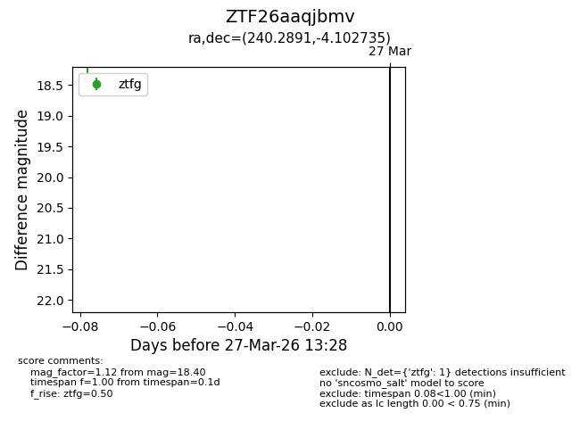
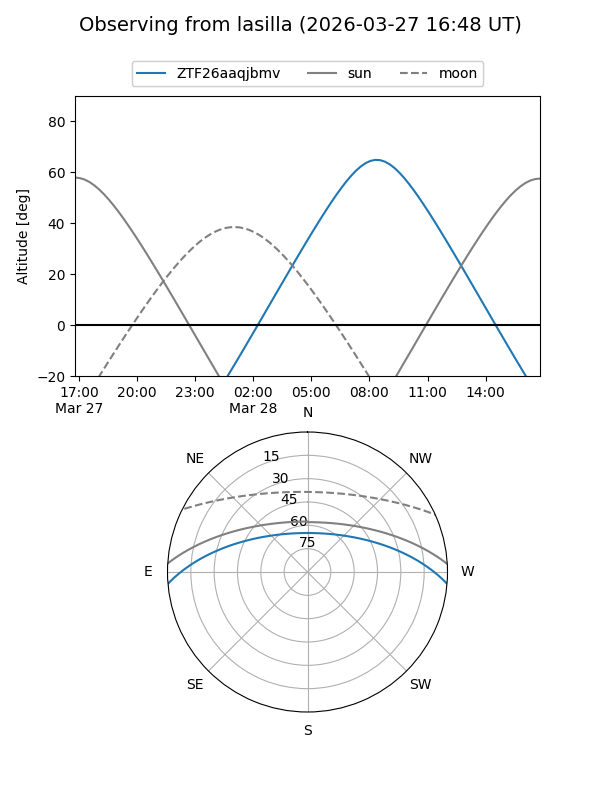
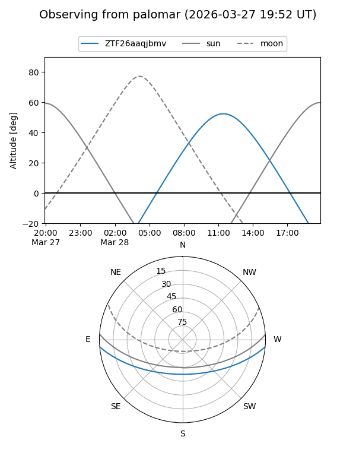

ZTF26aaqjbmv
Target ZTF26aaqjbmv at 2026-03-27 13:30
Aliases and brokers:
FINK: link
Lasair: link
ALeRCE: link
alt names
ZTF26aaqjbmv (ztf,fink_ztf)
Coordinates:
equatorial (ra, dec) = 240.2891,-4.10274
equatorial (HMS+DMS) = 16:01:09.39,-04:06:09.85
galactic (l, b) = (6.1132,+34.60436)
Flags:
Photometry:
last ztfg=18.40
1 ztfg detections
Lightcurve

Visibility


Additional plots